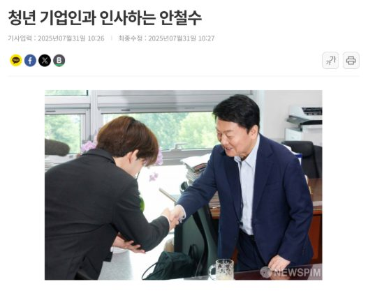
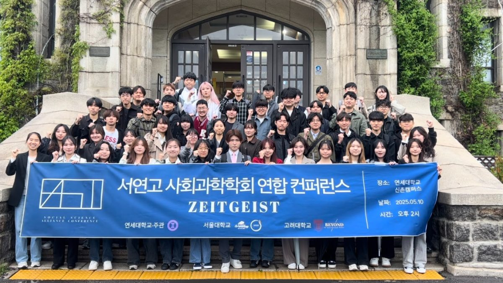
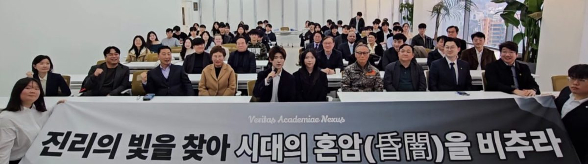
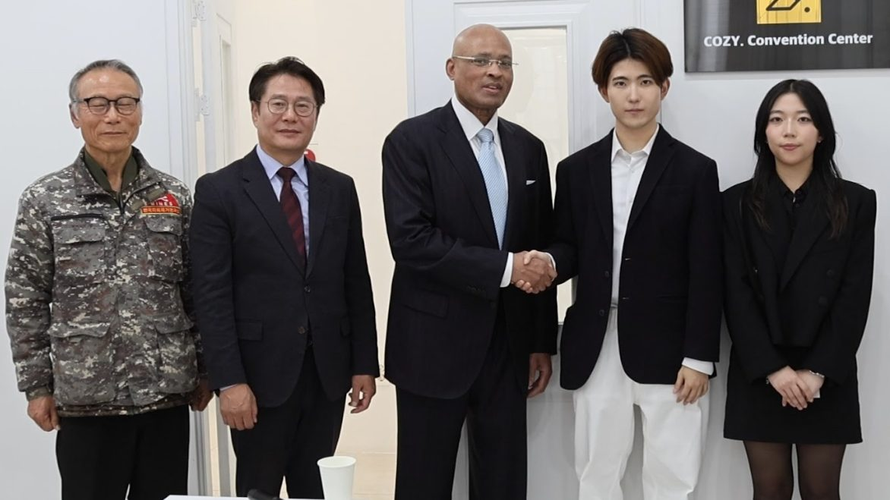
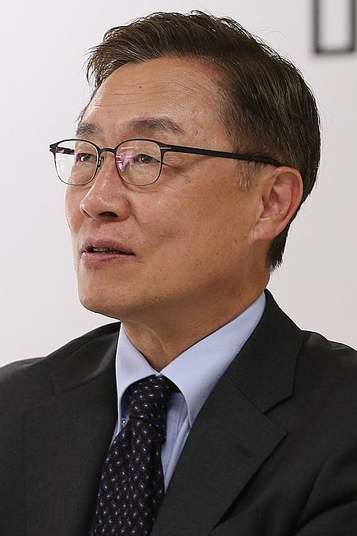
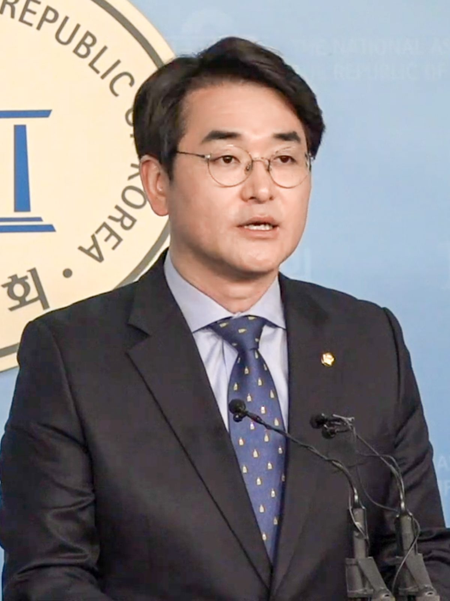
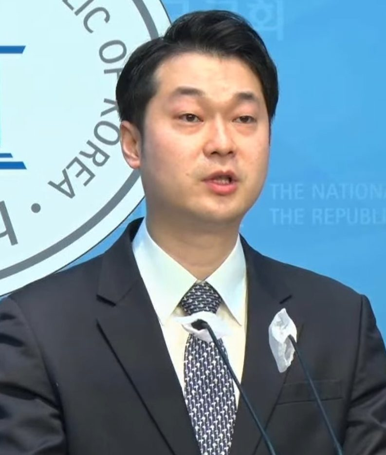
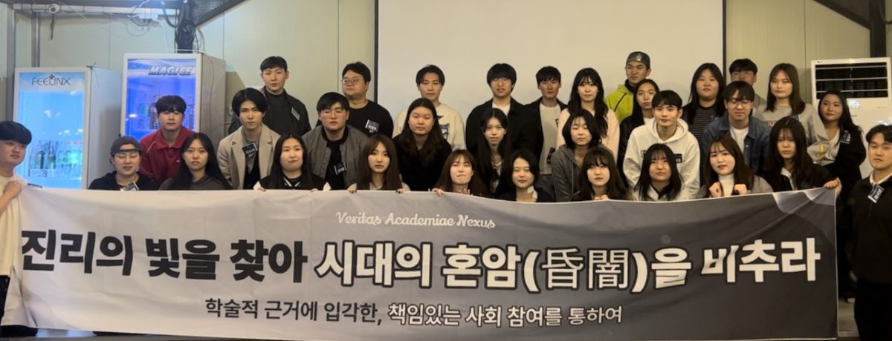

01
POLLITE
A policy-and-technology project using generative AI and cloud infrastructure to make legislative information more accessible and expand civic participation.
EST. SEOUL · YONSEI · KOREA
Korean Universities Academic Federation
Founded on an alliance among Seoul National, Yonsei and Korea University, now a federation of leading academic societies across Korea.
Connecting scholarship with public discourse
VAN conducts projects that connect academic research, policy and public discourse.

A policy-and-technology project using generative AI and cloud infrastructure to make legislative information more accessible and expand civic participation.

A joint academic exchange where social-science societies from Seoul National, Yonsei and Korea University presented research and held floor discussions.

An academic conference of more than 100 participants featuring presentations and debate on international politics and social issues.
01AcademiaScholarship
02TechnologyTechnology
03FinanceBusiness
04EducationEducation
05MediaMedia
06GovernanceLaw & Policy
07AllianceSolidarity
About VAN
VAN (Veritas Academiae Nexus) is a federation of leading academic societies across Korean universities, much as each campus has its own council of student societies. It began as an alliance among societies at Seoul National University, Yonsei University and Korea University, and now spans universities nationwide.
The alliance among those three universities is not new. Societies formally recognised on each campus had cooperated for decades. But the structure carried a built-in limit.
Operations were tied to student-government election cycles, and the leadership rotated among sitting society presidents. With terms typically lasting a single semester, the organisation effectively relaunched itself every term. Experience, networks and institutional assets served only as handover material and never accumulated into lasting capability.
This was not unique to the three-university alliance. Student councils and youth organisations face the same constraint of short, election-bound terms. However capable an individual leader, little of that converted into assets the next generation could inherit.
The Zeitgeist joint social-science conference brought the problem into focus. Students from the three universities saw that inter-university solidarity could create genuinely new intellectual possibilities rather than mere exchange. The participating society leaders resolved to move from one-off cooperation to a structure built for continuity and accumulation.
VAN therefore left the rotating model behind and built an independent, year-round platform that operates regardless of student-office terms. It has grown on continuous academic exchange and structured cooperation with faculty advisers, professional advisers and partner institutions.
Today VAN reaches beyond the founding three to include Sogang, Sungkyunkwan, Hanyang and other major universities, connecting academic capability across institutions and disciplines into a shared intellectual ecosystem.
VAN is also building ties with the global university community, in close contact with student leaders and academic society representatives at MIT, Oxbridge, UCLA, Columbia, Toronto, NUS, UCL, NYU, Imperial College London and LSE among others. The long-term aim is a global federation of universities centred on Korea, and a standard for the university community that future generations can carry forward.
Flagship Annual Initiative · VAN Conference 2026
The Arena of Innovation · 2026
A large-scale youth conference designed as a single journey from 2026 to 2050. Participants join not as an audience but as decision-makers who choose, question and vote, bringing academic depth into contact with real public agendas.
Session 1 is an immersive format in which participants make their own choices at six future checkpoints (2030, 2035, 2040, 2045, 2047, 2050) across security, AI, quantum computing and labour. In Session 2, sitting lawmakers return as 2050 presidential candidates to present national visions while the audience acts as voters who scrutinise, question and vote.
Representative Council
Representative
Yonsei University
Vice Representative
Korea University
Chief, Planning and Coordination Office
Ewha Womans University
Academic and Strategic Guidance
The Advisory Council combines a professional adviser group, which contributes practical and strategic insight, with a faculty group that provides academic depth and theoretical foundations. The Council Chair coordinates both groups and maintains the organization’s strategic direction.
Principal Senior Adviser
Head of Faculty Advisers
Representative Faculty Advisers
Chair, Advisory Council

Messages of support from public and academic leaders
Your level of collaboration is admirable, not only among three universities, but in establishing collaboration around the world. Your principles of truth, scholarship and solidarity are noble and will take you far.
I hope VAN grows beyond political camps and regions into a research organization that practices solidarity, inclusion and cooperation.

I hope VAN continues to grow as an organization of young people who open difficult paths and help build a brighter future through a broad and accurate understanding of history and reality.

Academic truth is also social justice. I encourage you to meet factional logic with courage and rigorous rationalism. Many senior colleagues and I will stand with VAN.

The goal of pursuing truth while contributing to social prosperity and change resonates strongly. Congratulations on VAN’s new beginning.
Future Activities
VERITAS · ACADEMIAE · NEXUS
Universities are places for the pursuit of truth, but truth realises only half its value if it remains within academic discussion. It gains public meaning and practical force when brought into conversation with complex social reality. We are wary of the opposite risk as well: if the work of carrying truth outward is over-emphasised, the academic depth and rigour that should underpin it can weaken. VAN therefore treats academic depth and social reach as equal principles. We will pursue truth with rigour, bring what we learn into society and build meaningful change through solidarity.

Donation Account
Donations support VAN’s continuing academic and public-interest work, youth forums, conferences and related projects.
See the full donation guideWhen possible, use “Your Name + VAN” as the depositor name.
Example · HongGildongVANOfficial Channels